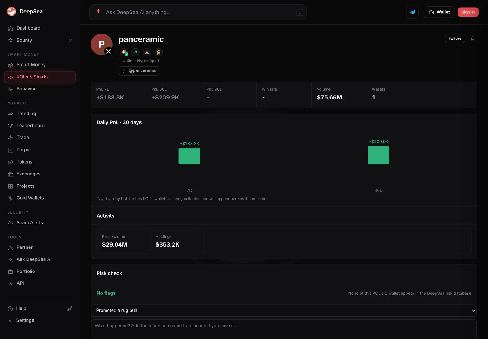

Influencer panceramic sold $351,000 of silver bets in 20 orders and went all cash
DeepSea shows 20 silver sell orders on Hyperliquid, then a wallet of $353,200 in USDC and no open bets. Ninety percent of the influencer's 30-day profit came this week.
Key points
- Influencer panceramic is No. 5 on DeepSea's 7-day KOL board with +$188,300, about 90% of the wallet's 30-day profit of $209,900.
- DeepSea lists 20 sell orders in a Hyperliquid silver market about four hours before our 12:45 a.m. ET check: 6,629 units worth $350,921.
- The wallet now shows $353,200 in USDC and nothing else. Silver's implied price matches CoinGecko's silver token within 1.6%.
 What DeepSea's data shows
What DeepSea's data shows
DeepSea's KOLs board ranks crypto influencers (KOLs, short for key opinion leaders) by the profit on their tracked wallets. At about 12:37 a.m. ET on November 10, panceramic was No. 5 over seven days at +$188,300. Only 2 freres 2 fauves, mk4, Frank and Chairman ² ranked higher.
The influencer's KOL page lists one wallet on Hyperliquid, a trading venue for perpetual futures (contracts with no expiry date). Its 30-day profit is +$209,900, so this week produced about 90% of the month's gain. DeepSea shows $75.66 million of total volume and $29.04 million of perp volume. It gives no win rate.
The latest 20 trades on the page are all sell orders in xyz:SILVER, a silver market listed on Hyperliquid, placed about four hours before we checked. They add up to 6,629 units for $350,921. The largest single fill was 2,800 units for $149,500. After that, the wallet's only holding is $353,200 in USDC, a dollar stablecoin, and the page lists no open position.
DeepSea's risk check shows no flags for this wallet.

Data: DeepSea (desea.io), checked November 10, 2026, 12:45 a.m. ET.
Checked against the silver price
The 20 orders work out to about $52.94 per unit ($350,921 divided by 6,629). CoinGecko priced Kinesis Silver, a token backed by one ounce of silver, at $53.79 at 12:50 a.m. ET, up 1.6% in 24 hours. The gap is about 1.6%, close to silver's move over the day, so the fills look like ordinary silver prices.
We could not open Hyperliquid's own API or explorer in this run, so the trades rest on DeepSea's page, with CoinGecko as the outside price check.
panceramic: this week vs. the month
US$ thousand
November 10, 2026, about 12:45 a.m. ET. Source: DeepSea KOL page panceramic.
New to this? The terms in plain English
A KOL, or key opinion leader, is a crypto influencer with a public following. DeepSea tracks wallets it has tied to those influencers and ranks them by profit. Hyperliquid is a trading venue for perpetual futures, or perps: contracts that track a price and never expire, so a trader can hold a bet on silver without owning any metal. xyz:SILVER is one of those markets, priced off silver rather than a coin.
A sell order in a perp market does one of two things. It can close a long, a bet that the price would rise, and lock in the result. Or it can open a short, a bet that the price will fall. What is left afterward tells them apart. Here DeepSea lists no open position, only USDC, a stablecoin tied to the US dollar. That is what a wallet looks like after it has closed its trades and is sitting in cash.
The 7-day and 30-day figures are rolling windows. Each day, the oldest day's trades drop out, so a big week can lift a rank quickly and fade just as fast.

What we do not know
DeepSea shows sell orders, not the reason for them. Selling can close a bet that silver would rise, or open a bet that it would fall. Because the page lists no open position afterward, a closed bet looks more likely, but DeepSea does not label it. It also does not show how much of the weekly profit came from silver.
We matched no public post by panceramic to these trades, so this is not a "said vs. did" check.
LC Insight analysis
This section is our reading of the facts above, not a statement of fact.
- We think the move to all cash is the notable part: the wallet took its trades off the table right after its best week of the month.
- The size is modest for Hyperliquid. $75.66 million of volume for about $210,000 of monthly profit shows how much trading sits behind a small gain.
- Crypto influencers trading silver, not coins, fits a wider shift we have seen on Hyperliquid toward stock, oil and metal markets.
What's next
- Whether panceramic reopens a silver position or moves the USDC
- Whether the 7-day lead holds as last week's trades roll off the board
- Silver's price on CoinGecko against the $52.94 average fill
Disclaimer. This article is based on public information and the sources listed below as of the update time shown. It is for information only and is not investment, legal or tax advice. Figures may change as companies and authorities publish new data.